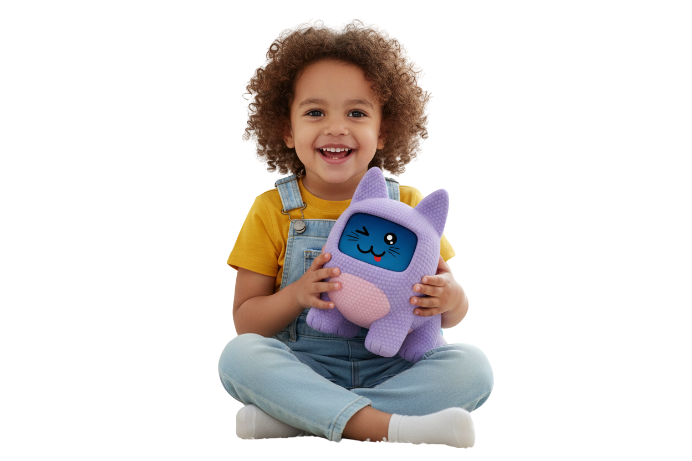
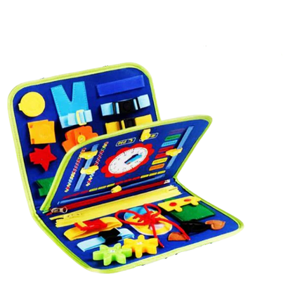
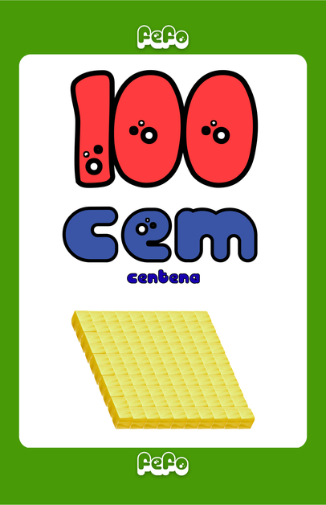
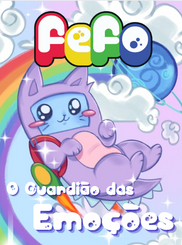
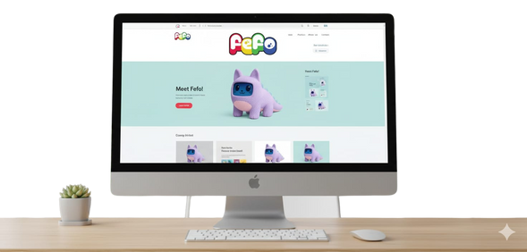
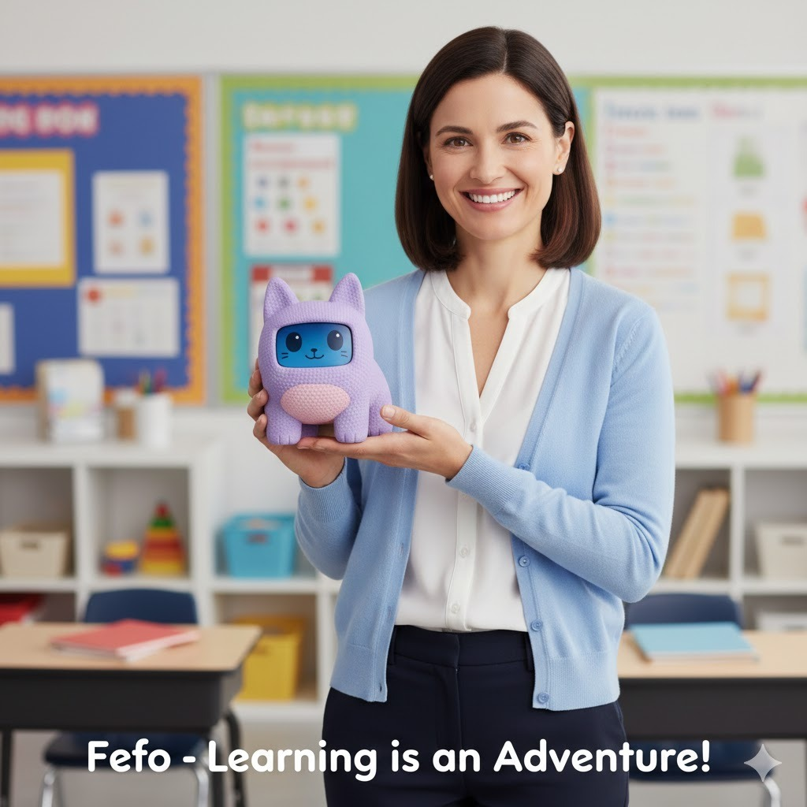

Um amiguinho eletrônico carismático com inteligência emocional, cromoterapia LED, histórias pedagógicas e sensoriamento de ruído que conecta crianças autistas, educadores e famílias.
O FEFO é uma ferramenta de apoio assistivo controlada por um adulto. Ele reforça o vínculo afetivo e serve para aproximar a criança do educador e da família, jamais distanciar ou substituir o contato humano.

O aumento exponencial de diagnósticos de TEA evidencia uma lacuna urgente nas escolas públicas e privadas. Sem recursos assistivos adequados, o ambiente escolar se torna um desafio de sobrecarga sensorial e isolamento.
Passam despercebidas na sala de aula por falta de ferramentas sensoriais e visuais para se expressarem e participarem ativamente.
Pais enfrentam angústia diante das crises de desregulação sensorial em casa e da falta de continuidade da aprendizagem.
Professores e agentes de apoio lidam com salas numerosas sem um mediador assistivo dedicado ao acolhimento.
Poucas tecnologias no mercado brasileiro são desenvolvidas sob medida para atender o tripé pedagógico, lúdico e terapêutico.
Diferente de brinquedos convencionais ou apps isolados, o FEFO une em um único equipamento três pilares fundamentais para transformar a inclusão.
Estimula a linguagem, atenção e cognição. Oferece atividades de rotina visual e contos ilustrados alinhados à BNCC para auxiliar a mediação docente.
Aprender brincando com 40 contos e fábulas originais, mídias autorais, cards físicos e jogos simples na tela que tornam a descoberta leve e alegre.
Acolhe e acalma. Com cromoterapia NeoPixel, pulsação vibratória de abraço e sensor acústico de ruído MAX9814 que dispara o modo de acolhimento automático em sobrecargas sonoras.
Um ecossistema completo de mídias, áudio-aulas, cromoterapia e autorregulação emocional.
Fábulas e pequenos contos gravados que entretêm e ensinam sobre emoções, valores e convivência em sala de aula.
Áudio-aulas interativas sobre saúde e hábitos diários que auxiliam a criança a ter autonomia nos cuidados pessoais.
Conteúdos de Ciências, Geografia, História e Ensino Religioso adaptados às habilidades da BNCC para apoiar o professor.
Organização de rotina com alarmes visuais e sonoros que trazem previsibilidade e segurança para o aluno TEA.
Ensina sobre segurança em casa, no trânsito, na escola e como agir preventivamente em situações de risco.
Músicas infantis originais, sons da natureza e temas instrumentais relaxantes selecionados especificamente para autistas.
Cromoterapia com luzes e efeitos luminosos NeoPixel configurados para proporcionar alívio visual e conforto sensorial.
Sessões guiadas de respiração e relaxamento para acalmar a criança e conter episódios de agitação, crises e dispersão.
Desafios lúdicos em que a criança escolhe cards físicos e o FEFO responde com frases carinhosas de incentivo e apoio.
Experimente a interação facial e as respostas luminescentes do FEFO Pet em tempo real.
Um leque de recursos físicos táteis e digitais que enriquecem a experiência pedagógica e promovem a coordenação psicomotora.

Estímulos táteis e visuais para desenvolver a coordenação motor fina, a psicomotricidade e a rotina visual diária.

Cards de alfabetização, cores, números e animais para atividades interativas e mediação por comunicação alternativa.

Histórias impressas do FEFO que ensinam empatia, diversidade e ajudam no letramento socioemocional.

Plataforma com conteúdos adaptados, atualizações periódicas e canal de apoio para professores e responsáveis.
O FEFO representa acolhimento, pertencimento e empatia em forma de inovação assistiva.
Mais do que um dispositivo, o FEFO é o mascote da inclusão no Brasil — um símbolo de aceitação das diferenças, pertencimento e amparo às famílias neurodivergentes.
Por trás do FEFO existe uma equipe especializada que transforma uma dor social em um propósito de vida.

Investir em Inclusão. Investir em Afeto. Investir em Futuro.
Garantir maior permanência escolar e desenvolvimento para crianças autistas na rede pública e privada.
Oferecer recursos assistivos práticos para professores que desejam acolher sem se sobrecarregar.
Fortalecer a rede de apoio das famílias que necessitam de orientação e ferramentas no lar.
Colaborar para construir ambientes escolares modernos, acolhedores e preparados para a neurodiversidade.
Resultados observados em ambiente real por educadores e respostas para as principais dúvidas.